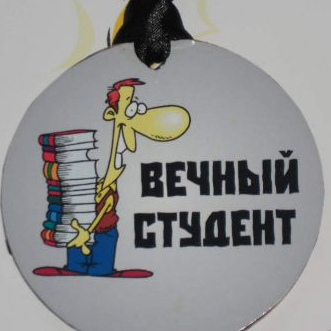

Студенту хорошо, когда он сыт. А сыт он после пива.
Студенческие годы – это замечательное время, которое дарит множество открытий, веселья и позволяет найти новых друзей. Студент – уникальный человек, который может не есть,
не спать, пропускать пары, а потом взять, и за пару ночей все выучить.
Хотя, и по этому поводу ходят шутки, что сколько бы студент не учил и как бы не готовился к экзаменам,
ему все равно не хватит одной ночи, чтобы все выучить.
Что значит вечный студент? Вообще синдром вечного, или странствующего студента,
может проявляться по-разному.
-
Некоторые учатся «взахлеб», пока их коллеги остаются на второй год,
уходя и снова восстанавливаясь в вузе. И все они – вечные студенты.
-
Это учащийся, который никак не может закончить процесс обучения и получить хотя бы диплом о первом высшем образовании.
-
Это человек, который учится всю жизнь, не применяя своих знаний на практике.
